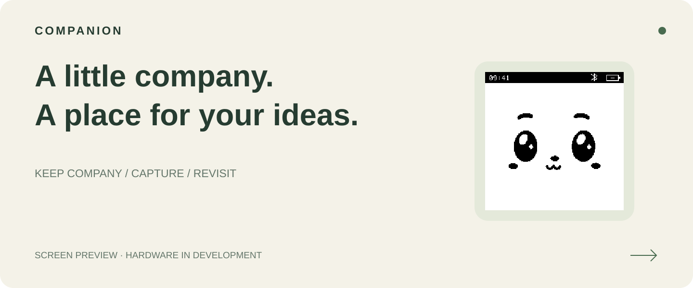

English · 简体中文
Companion Type
A little companion to keep close, and a place for the words and ideas you want to keep.
Meet Companion · Get the Windows app · User guide · Readiness · Device firmware
Development release · Windows is the current usage path. Local installation and some real-device use have been recorded; whole-product acceptance remains open. Software, physical experience and public release are confirmed separately.
Three everyday moments
| Keep it close | Capture the moment | Come back to it |
|---|---|---|
| Expressions, blinking and small pet sounds give your desk or bag a familiar companion. | Start a recording on the device and follow its capture and saving states. | Sync to Type, read text in My recordings, search and rename; play audio or organize actions when needed. |


Existing screen previews, not hardware photographs or live readings. The original expressions and accessories remain. With a connected computer you can explicitly start short-turn chat; replies appear as text at the bottom of the pet screen. The speaker provides short prompts, not spoken replies. Wake-word entry is not delivered.
Get the Windows app
Type is the companion Windows application for Companion. It connects to the device, receives recordings, saves them on your computer, and plays them back. This is what “View on PC” on the device refers to. Receiving, saving and playing the original audio does not require transcription or minutes services to be configured first.
This is still a development candidate; a public installer download has not been published. If you have received the MSI in your current delivery, install it and open Companion Type. Otherwise, obtain the Windows installer from the person providing that delivery; this page cannot yet supply a public download. A native phone installer has not been delivered.
Start with a short recording
- Install and open Companion Type, enable pairing on the device, connect to Companion in Type and sync its time. Routine communication uses Bluetooth; USB-C supplies power.
- In 设备与同步 → 用 Companion 录音, select 开始录音, speak briefly, then select 停止并保存. This route saves device audio without requiring a transcription service first.
- Away from the computer, hold the physical button for about one second while awake to start; hold again to stop. The first complete press from sleep only wakes. The guide explains touch shortcuts and the current development firmware's short-press screen-debug assignments.
- After sync, find the item in 我的录音. Read existing text directly and play the audio only when needed. Give it a useful name.
- An audio-only item offers 转文字; choose 整理重点 when you want organized actions. Review before editing or exporting.
“Saved” on the device is followed by a separate computer sync. In Type, wait until the recording's original audio is saved locally before playing it from the library. The device's saved notice does not mean that the computer has received the complete file. If Type is disconnected or still receiving, retain the device recording and reconnect later to continue syncing.
The first-use guide remembers progress per device. A browser demo cannot complete the real-device checks. USB-C supplies power only; routine device communication uses Bluetooth.
Keep the audio. Make the content useful.
| Your task | In the Type candidate |
|---|---|
| Listen now, organize later | Record first; sync, transcribe and generate minutes afterward |
| Read along at your computer | Online notes with a configured streaming transcription service |
| Find a thought again | Search titles, full transcripts and both minutes variants; play retained local audio |
| Make the notes your own | Edit titles and minutes with manual-source labels, mode isolation and save-conflict checks |
| Take the result elsewhere | Markdown / TXT / JSON and original audio; SRT with aligned timing. Share a time and owner across checklist items, export TXT or show a text QR code. Explicitly confirm dates and choose per-item reminders for calendar export; import still takes place in the receiving calendar |
| Know what is saved | Separate device copy, transfer, local-save and reclaim status; explicit save retry |
Background recovery does not overwrite manual edits. Explicit regeneration replaces the original recording mode's minutes; viewing another mode does not change that target. Editing clears stale structured action items. Ordinary offline recordings generate minutes for their capture mode; the completed online workflow can generate both mode variants.
Company at your pace
Standard, Lively and Quiet have clear explanations and a stoppable ten-second silent illustrative preview in Type. Previewing does not apply device settings. Quiet hours need valid device time. Routine pet sounds are suppressed during recording; saving and errors remain visible in status.
Services and your content
Original audio and the library are local. Cloud transcription sends relevant audio; cloud organization sends selected text and explicitly chosen notes. Chat may use the current utterance and memory you allow. This development version uses existing service configuration; formal accounts, fees and quotas follow actual delivery terms. Record-first is not fully local recognition, and a configured credential is not proof of a successful call.
Compatible devices support recording without a preset end time until you stop or device space runs out. Older devices may still require a duration; follow the current interface. Keep the device connected and syncing where possible for a long meeting. When storage fills, only the audio already captured is retained. Sealed segments can be synced into one recording; interruptions or missing segments do not establish a complete session. See the user guide.
One product, three parts
| Repository | Responsibility |
|---|---|
| Companion Type (here) | Connection, sync, library, transcription, minutes, editing and export |
| Companion Firmware | Expressions, interaction, capture, storage, Bluetooth transfer, sounds and recovery |
| Companion Hardware | Electronics, enclosure, manufacturing data and board validation |
Windows is the current desktop product path. Browser and mobile directories are development/demo shells, not a delivered native phone app. No purchase or production-download availability is implied.